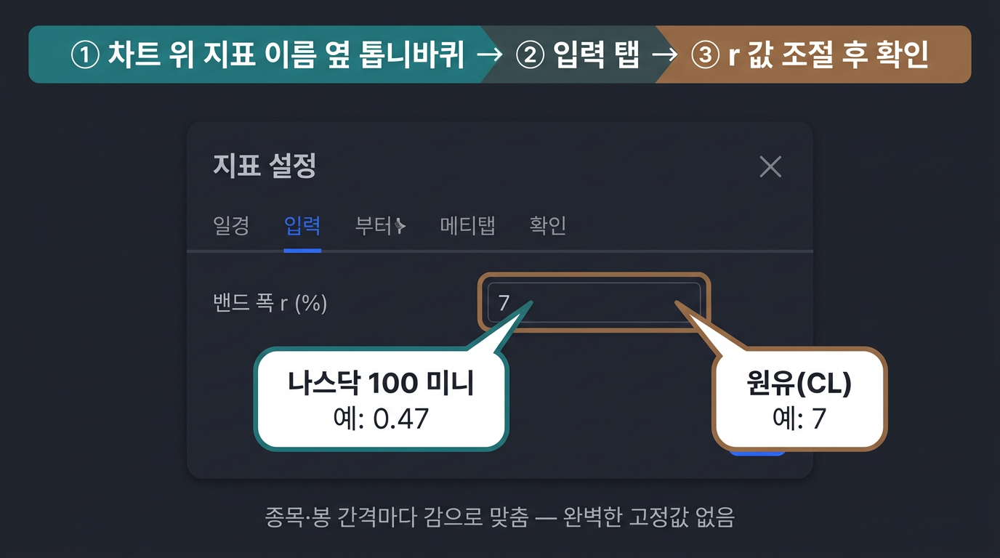

한눈에 보기

위 그림은 교육용 목업입니다. 사용 중인 Pine 스크립트 이름·메뉴 문구가 다르면, 차트 위에 붙은 해당 지표 이름 옆의 톱니바퀴를 눌러 같은 식으로 찾아 주세요.

주식회사 행복도담 인베스트
Haengbokdodam Invest co.ltd
TradingView · Magic Line
종목·봉 간격마다 밴드가 너무 넓거나 좁게 느껴지면, 입력값의 r을 조금씩 바꿔 보면서 맞추면 됩니다. 아래는 클릭 경로와 대략 값 예시를 한 장으로 정리한 안내예요. (실제 TV 화면 캡처로 바꿔 쓰셔도 됩니다.)

위 그림은 교육용 목업입니다. 사용 중인 Pine 스크립트 이름·메뉴 문구가 다르면, 차트 위에 붙은 해당 지표 이름 옆의 톱니바퀴를 눌러 같은 식으로 찾아 주세요.
아래 숫자는 감으로 맞춘 예시이며, 봉 주기·브로커 심볼·지표 버전에 따라 달라질 수 있습니다.
레포의 Pine 예시에서는 Magic Line 그룹에 밴드 폭 r (%) 형태로 들어가 있는 경우가 많습니다. 배포 스크립트마다 그룹 이름이 다를 수 있어요.
운영에서 쓰는 TradingView 캡처를 그대로 쓰고 싶다면, 위 일러스트 대신 assets/guide-tv-magic-r-settings.png 파일만
같은 이름으로 교체해 주시면 이 페이지에 바로 반영됩니다.